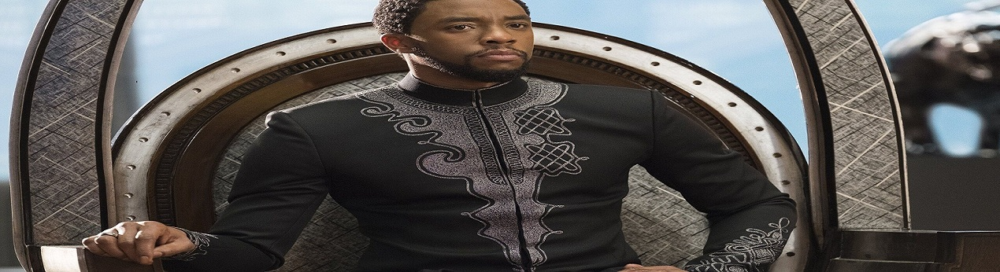

EARLY LIFE
Chadwick Aaron Boseman was born and raised in Anderson, South Carolina,the son of Carolyn and
Leroy Boseman, both African-American. His mother was a nurse and his father worked at a textile factory, managing an upholstery business as well. According to Boseman, DNA testing from 'African Ancestry' indicated that some of his ancestors were Krio people from Sierra Leone, Limba people from Sierra Leone and Yoruba people from Nigeria.
Boseman graduated from T. L. Hanna High School in 1995 where he played on the basketball team. In his junior year, he wrote his first play Crossroads, and staged it at the school after a classmate was shot and killed.
Boseman attended college at Howard University in Washington, D.C., graduating in 2000 with a Bachelor of Fine Arts in directing.[18] One of his teachers was Phylicia Rashad, who became a mentor.[14] She helped raise funds, notably from her friend and prominent actor Denzel Washington,[6] so that Boseman and some classmates could attend the Oxford Mid-Summer Program of the British American Drama Academy in England, to which they had been
Boseman wanted to write and direct, and initially began studying acting to learn how to relate to actors.After he returned to the U.S., he graduated from New York City's Digital Film.
He lived in Brooklyn at the start of his career. Boseman worked as the drama instructor in the Schomburg JuniorScholars Program, housed at the Schomburg Center for Research in Black Culture in Harlem, New York.[8] In 2008, he moved
to Los Angeles to pursue his acting career
CAREER
Boseman acted on stage in multiple productions, winning an AUDELCO award in 2002, and he also directed and wrote plays. Part of the Hip Hop theater movement, his play-writing included Rhyme Deferred (co-writer and performer), and Hieroglyphic Graffiti.Boseman's script for Deep Azure was commissioned by the Congo Square Theatre Company in Chicago, and was nominated for a 2006 Joseph Jefferson Award for New Work. He directed a number of theater productions, and directed, wrote, and produced the short film, Blood Over a Broken Pawn in 2007, which was honored at the 2008 Hollywood Black Film Festival.
In 2003, Boseman was cast in his first television role, an episode of Third Watch. That same year, Boseman portrayed Reggie Montgomery in the daytime soap opera All My Children, but stated that he was fired after voicing concerns to producers about racist stereotypes in the script; the role was subsequently re-cast, with Boseman's future Black Panther co-star Michael B. Jordan assuming the role. His early work included episodes of the series Law & Order, CSI: NY,and ER.In 2008, he played a recurring role on the television series Lincoln Heights and appeared in his first feature film, The Express: The Ernie Davis Story, as running back Floyd Little.He landed his first regular role in
the 2010 television series Persons Unknown.
Boseman's breakthrough role was in the 2013 film 42, in which he portrayed baseball pioneer and star Jackie
Robinson. He had been directing an off-Broadway play in East Village when he auditioned for the role,and
was considering giving up acting and pursuing directing full-time at the time. About 25 other actors had been seriously considered for the role, but director Brian Helgeland liked Boseman's bravery and cast him after he had auditioned twice.[37][18] Robinson's widow, Rachel Robinson, commented that Boseman's performance was like seeing Jackie again.The same year, Boseman also starred in the independent film The Kill Hole, which was released in theaters afew weeks before 42.
Boseman at the Deauville Film Festival in 2014
As James Brown in 2014's Get on Up, Boseman did some singing and all of his own dancing.He watched Brown's performances for weeks, and spoke with Mick Jagger before deciding to portray 'The Hardest Working Man in Show business'. According to Irish Times film correspondent, Donald Clarke, "Get on Up tested every weapon in the actor’s arsenal...The performance confirmed that, like a star from Hollywood’s golden age, Chadwick Boseman could do it all anddo it all with style."
In 2014, Boseman also appeared opposite Kevin Costner in Draft Day, in which he played an NFL draft prospect. In 2016, he starred as Thoth, a deity from Egyptian mythology, in Gods of Egypt. Boseman was one of the few actors of color featured in the film, which had drawn criticism for depicting a predominantly white cast playing Egyptian characters. Agreeing with the criticism, Boseman said it motivated him to accept the role to ensure one of the film's Egyptian deity would be of African descent.
In 2016, he began portraying the Marvel Comics character T'Challa / Black Panther, with Captain America: Civil War being his first film in a five-picture deal with Marvel. He headlined Black Panther in 2018,[45] which focused on the
character and his home country of Wakanda in Africa. The film opened to great anticipation, becoming one of the highest-grossing films of the year in the United States. The role earned Boseman a spot on the 2018 Time 100 as one of the world's most influentual people, with Sean Combs writing his entry.He reprised the role in both Avengers: Infinity War and Avengers: Endgame, which were released in 2018 and 2019, respectively. Both films were the highest
grossing of the year they were released, with Endgame going on to become the highest-grossing film of all time.
Boseman portrayed Thurgood Marshall in the biographical film Marshall in 2017. Set years before he became the first African American Supreme Court Justice, the movie focuses on one of Marshall's early cases. It was premiered at Howard University, which both Boseman and Marshall had attended.
In 2019, he starred in 21 Bridges, an American action thriller film directed by Brian Kirk, as an NYPD detective who shuts down the eponymous 21 bridges of Manhattan to find two suspected cop killers. It was also announced that Boseman was cast in the Netflix war drama film Da 5 Bloods, directed by Spike Lee. The film was released on June 12, 2020.Lee, in choosing Boseman for the divine-like character of "Stormin" Norman, said, "This character is heroic;
he's a superhero. Who do we cast? We cast Jackie Robinson, James Brown, Thurgood Marshall, and we cast T'Challa
APPRAISER
According to film critic Owen Gleiberman in Variety, "Boseman was a virtuoso actor who had the rare ability to create a character from the outside in and the inside out [and he] knew how to fuse with a role, etching it in three dimensions [...] That's what made him an artist, and a movie star, too. Yet in Black Panther, he also became that rare thing, a
culture hero". Similarly, reviewer Richard Brody in The New Yorker finds the originality of Boseman's formidable acting technique in his ability to empathize with the interior lives of his characters and render them on screen as fully and completely belonging to the character. He was uniquely able to capture and portray the dignity of his characters, according to The New York Times critic Wesley Morris.The Guardian's Peter Bradshaw wrote of the actor's
"beauty, his grace, his style, his presence [...] These made up Chadwick Boseman's persona [and he became] the lost prince of American cinema[,] glorious and inspirational".
PERSONAL LIFE
Boseman began dating singer Taylor Simone Ledward in 2015.The two reportedly got engaged by October 2019, and they later married in secret, as revealed by Boseman's family in a statement announcing his death.
Boseman was raised a Christian and was baptized. He was part of a church choir and youth group and his former pastor said that he still kept his faith.[59] Boseman had stated that he prayed to be the Black Panther character before he wascast as the character in the Marvel Cinematic Univers
ILLNESS AND DEATH
Boseman was diagnosed with stage III colon cancer in 2016, which eventually progressed to stage IV before 2020.He never spoke publicly about his cancer diagnosis, and according to The Hollywood Reporter, "[o]nly a handful of non-family members knew that Boseman was sick... with varying degrees of knowledge about the severity of [his] condition".[61] During treatment, involving multiple surgeries and chemotherapy, he continued to work and completed
production for several films, including Marshall, Da 5 Bloods, Ma Rainey's Black Bottom, and others. Boseman died at his home as a result of complications related to colon cancer on August 28, 2020, with his wife and family by his
side. Boseman died without a will, and his estate will be governed by California law.
Back to the top